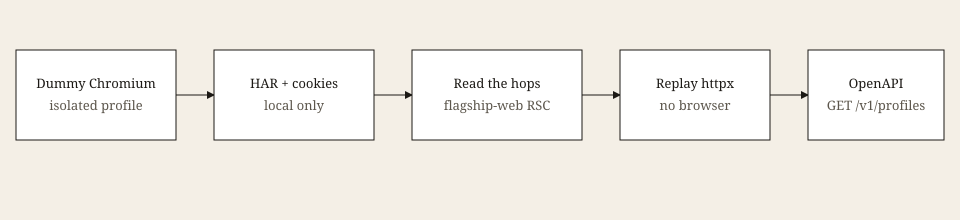
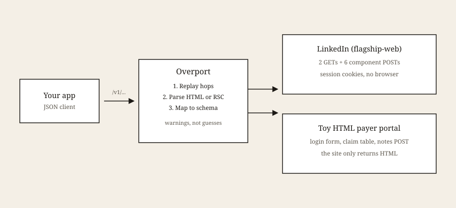
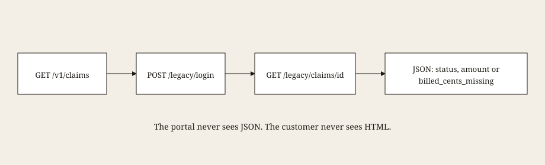
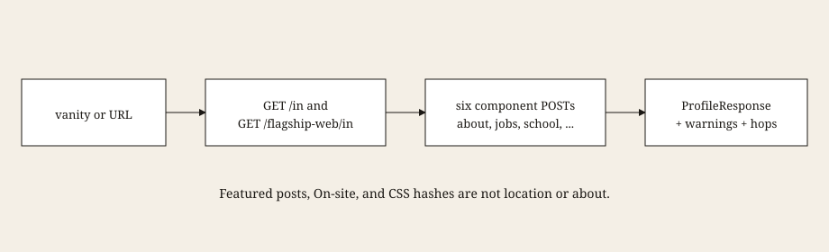
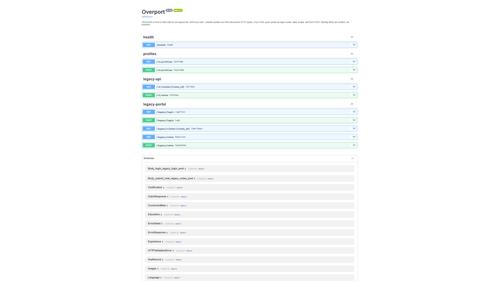

How these APIs were found
LinkedIn does not hand you profile JSON. The live /v1/profiles route, and the
OpenAPI that documents it, came from a local lab: a dummy account in an isolated
Chromium profile, HAR captures of the logged-in Network tab, session cookies kept on
disk only, then a browserless replay of the hops that actually carried profile data.

- Isolated Chromium. A throwaway browser profile, dummy LinkedIn account only. Not a personal login. DevTools on that Chromium window, not a browser in production.
- HAR with content. Fetch/XHR while opening a profile. That file showed which calls were the shell and which were the about / experience / education / skills cards. Feed, people-you-may-know, and ads were in the log and were left on the floor.
-
Cookies, locally.
li_atandJSESSIONIDfrom that session stayed in a local env file. They were never committed. The public hosted service does not have them, which is why hosted profile calls return 401. -
Reverse-engineer the path. The useful traffic was not classic Voyager
REST. It was flagship-web RSC: a skip-redirect GET, a flagship profile GET, then six
POST /flagship-web/rsc-action/actions/componentcard fetches. -
Replay with httpx, map the text. Nested React children for About, reject
Featured posts and On-site as location, keep year spans as education dates. The customer
payload is that schema plus
warningsandmeta.hops.
HAR files and the Chromium profile stay on the machine that captured them. What shipped is the hop list, the mapper, tests against synthetic RSC, and the OpenAPI on the live API.
Artifacts from that lab
The production hop list, copied out of the HAR (paths only, no cookies, no query secrets):
| Hop | Method | What it is |
|---|---|---|
skip_redirect | GET | /in/{vanity}/?skipRedirect=true |
flagship_shell | GET | /flagship-web/in/{vanity}/ |
about | POST | component profileCardsAboveActivity |
experience | POST | component profileCardsExperienceOnly |
education | POST | component Part1WithoutExp |
skills | POST | component Part7 |
certs | POST | component Part3 (often a placeholder) |
languages | POST | component Part4 (often a placeholder) |
Spacing is 2.5 seconds between hops, about four profiles a minute. Each hop shows up on the JSON as method, status, and bytes. Bodies and cookies do not.
Mapper leftovers we treated as junk, not fields:
- Featured posts and
N reactions · N commentsare not About. On-site/ Remote / Hybrid are not a city.- Skill chips and
+7 skillsare not a company name. - CSS hashes,
$L1,divare not copy. - A missing certs or languages card stays empty and
sections_availablesays so.
Try LinkedIn
This is the assigned problem: a profile URL in, versioned JSON out, no browser in production.
Eight hops, 2.5 seconds apart. The public container has no LinkedIn session, so the live call
returns 401 linkedin_not_configured. That is the honest hosted result. Use
Try it out on OpenAPI for the same
route. A 200 needs the service run locally with a dummy-account session.
Click GET /v1/profiles. This hits the live API, not a sample file.
Try a claim
Same wrapping job on a toy HTML portal this process owns, so this path is live without anyone
else's session. Clerk login is clerk / clerk on
/legacy/login.
Click a button. This hits the live API.
The idea
Healthcare software wants structured claims, eligibility, notes, and charts. The source of truth is often a logged-in HTML app that was never designed for another program to read. That gap is the whole product category: wrap the portal, give the rest of the stack JSON it can trust.
LinkedIn is the same shape of problem on a public site. There is a profile page. There is a session. There is no official profile JSON for a third party to call. The production path here is not a headless browser clicking around. Capture once, then replay the hops with HTTP. The mapper walks React Server Component text and keeps the human copy: name, headline, about, jobs, school, skills.
The extra connector is a toy payer portal that only speaks HTML. Login is a form.
A claim is a table. A note is another form. The customer API is
GET /v1/claims/{id} and POST /v1/notes. Same job, on a site we own,
so the live demo does not depend on anyone else's session.
Architecture
Two connectors, one result type. Each hop records method, status, and byte size. Cookie values and response bodies stay out of the customer payload.

The LinkedIn path is eight hops: a public profile GET, a flagship-web GET, then six component POSTs for about, experience, education, skills, certifications, and languages. They are spaced 2.5 seconds apart, about four profiles a minute. Feed and people-you-may-know traffic is not replayed.
The portal path is shorter: POST login, GET the claim page, parse the table. For a note, POST the HTML form after the same login.
User journeys
A billing tool asks for a claim

- The tool calls
GET /v1/claims/CLM-1001. - Overport posts the clerk login to
/legacy/loginand keeps the session cookie. - It GETs
/legacy/claims/CLM-1001, which is an HTML table, not JSON. - The parser reads labeled cells. Status, initials, as-of date, billed amount if the row exists.
- The tool receives a
ClaimResponse.meta.hopsshows what happened, without bodies.
A product asks for a LinkedIn profile

- The product sends a vanity name or a
/in/...URL. - Overport replays the known flagship-web hops with the configured session.
- RSC payloads are walked for visible text, including nested React children in About.
- The product gets a versioned profile. Empty certs or languages stay empty and marked unavailable.
The hosted demo does not attach a LinkedIn session. Profile calls return 401 until you run the service locally with your own cookies. The portal journeys work on the live API with no extra setup.
What the portal looks like
This is on purpose. The upstream is meant to look like an internal clerk screen from 2004: gray background, default fonts, a table, a form. The JSON on the other side is the point.
What the customer sees

/docs. The HTML portal routes are listed so the wrap is obvious.{
"schema_version": "1.0",
"claim_id": "CLM-1001",
"status": "Paid",
"billed_cents": 125000,
"patient_initials": "J.D.",
"as_of": "2026-01-15",
"warnings": [],
"meta": {
"hops": [
{ "name": "login", "method": "POST", "status": 200, "bytes": 150, "skipped": false },
{ "name": "claim_status", "method": "GET", "status": 200, "bytes": 363, "skipped": false }
]
}
}
{
"schema_version": "1.0",
"claim_id": "CLM-1002",
"status": "Pending",
"billed_cents": null,
"patient_initials": "J.D.",
"as_of": "2026-02-01",
"warnings": ["billed_cents_missing"],
"meta": {
"hops": [
{ "name": "login", "method": "POST", "status": 200, "bytes": 150, "skipped": false },
{ "name": "claim_status", "method": "GET", "status": 200, "bytes": 326, "skipped": false }
]
}
}
Run it yourself
git clone https://github.com/SwaggyXO/overport.git cd overport uv sync --extra dev uv run uvicorn app.main:app --host 127.0.0.1 --port 8000
Open http://127.0.0.1:8000 for this site, /docs for OpenAPI,
/legacy/login for the ugly portal. Clerk user and password default to
clerk / clerk.
Profile fetches need a LinkedIn session in the environment. Without it, those routes
return 401. That is expected on the public deploy. Locally, the same
GET /v1/profiles?vanity=... used above returns a mapped profile.
Limits
- LinkedIn may treat automated access as a terms violation. This is a demonstration, not a scraping product.
- Sessions expire. The mapper can only see what the session can see.
- Placeholder cards (certs, languages) stay empty and are marked unavailable.
- The toy portal is not an EHR, not FHIR, and not PHI. Initials only.
- GitHub Pages hosts this document. The API process cannot run on Pages. The live service is a container.